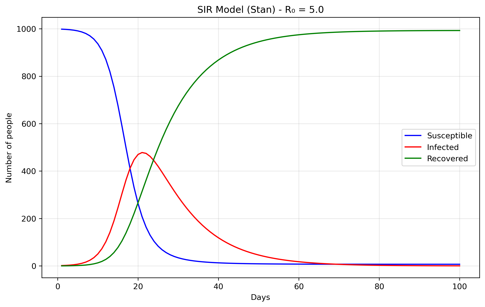
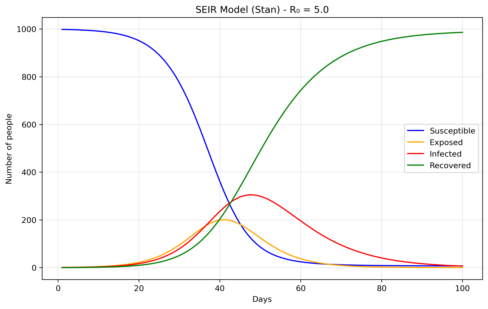
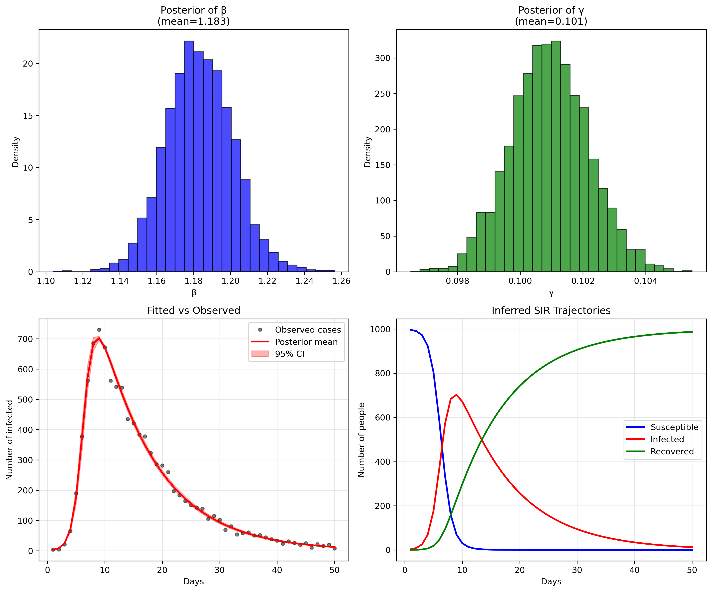
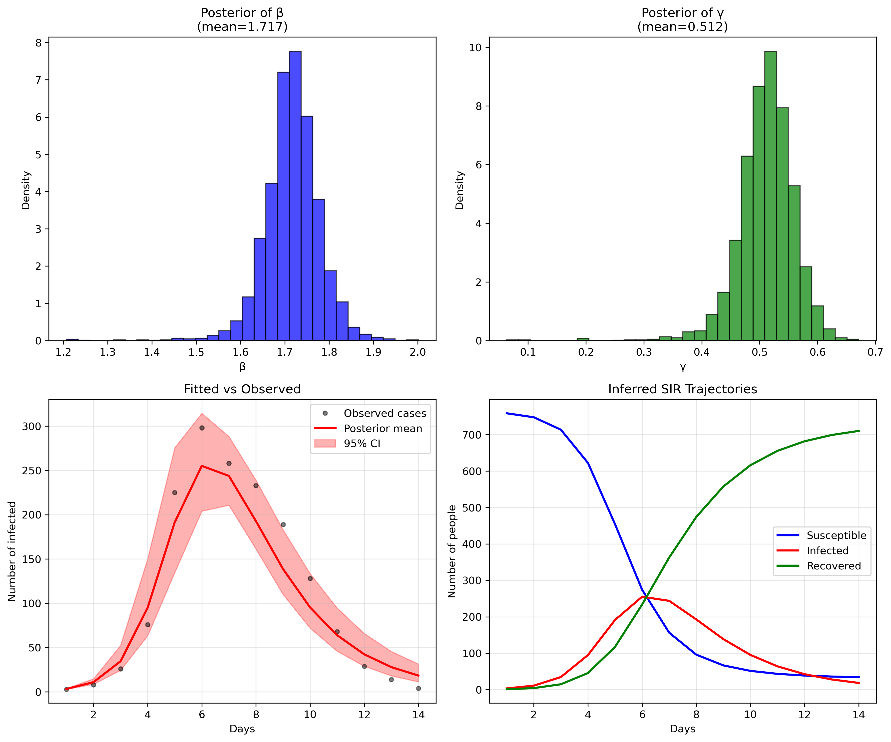

Stan-Based Epidemiological Models I: The Basics
Table of Contents
Introduction
This post is primarily for my own understanding rather than to present
new ideas. I'll walk through the latest epidemiological model
developed by a leading group of researchers, one that incorporates
behavioral factors like mobility, from the ground up. Finding working
Stan implementations proved challenging for several reasons. Version
changes have broken many existing examples. For instance, the
differential equation solver was renamed from integrate_ode_rk45 to
ode_rk45. Even LLMs struggle with these updated syntax
requirements. I've therefore reconstructed the models from scratch,
hoping this will help others facing similar implementation issues.
This work is motivated by an upcoming analysis of dengue fever outbreaks in Chile, which present unique modeling challenges due to their vector-borne transmission patterns and seasonal dynamics. However, before tackling dengue-specific models, I need to establish a solid foundation in basic epidemiological modeling with Stan, hence this step-by-step walkthrough of increasingly complex compartmental models.
This post has been heavily inspired by Grinsztajn et al.
The simplest models in Stan
SIR
Files are: sir0.stan: the model, sir0.py: the runtime.
SIR models divide a population into three compartments: S - Susceptible → I - Infected → R - Recovered. S: People who can catch the disease, I: People currently infected and contagious and R: People who have recovered (or died!) and are immune. The parameters of these models are
- beta: Transmission rate or how easily the disease spreads
- gamma: Recovery rate or how quickly people recover
- R0 = beta/gamma: Basic reproduction number or average new infections per infected person.
The rate of transition from one state to the other can be modeled using a system of ordinary differential equations, with each equation describing the rate of change of one compartment.
dS/dt = -beta × S × I / N dI/dt = beta × S × I / N - gamma × I dR/dt = gamma × I
which in turn can be straightforwardly encoded in Stan as:
functions { vector sir(real t, vector y, real beta, real gamma) { real S = y[1]; real I = y[2]; real R = y[3]; real N = S + I + R; vector[3] dydt; dydt[1] = -beta * S * I / N; // dS/dt dydt[2] = beta * S * I / N - gamma * I; // dI/dt dydt[3] = gamma * I; // dR/dt return dydt; } }
The most important part now is simply generating the quantities.
generated quantities { array[n_days] vector[3] y = ode_rk45(sir, y0, t0, ts, beta, gamma); }
You will see in sir0.stan that there's an
empty model{...} block. In Stan, the model block is where you
typically specify your likelihood and priors for Bayesian
inference. However, in this case, we're not doing any parameter
estimation. We'll come back to this below

The data come from the Python file sir0.py.
N = 1000 # Total population size. data = { 'n_days': 100, # How long to run the simulation (100 days) 't0': 0, # Starting time (day 0) 'y0': [N-1, 1, 0], # Initial conditions: [999, 1, 0] 'beta': 0.5, # Transmission rate 'gamma': 0.1 # Recovery rate }
The initial conditions y0: [N-1, 1, 0] set up the epidemic starting
point. S0 = 999 means almost everyone in the population starts
susceptible to the disease. I0 = 1 indicates there is one initially
infected person, often called "patient zero," who will start the
outbreak. R0 = 0 shows that nobody has recovered yet at the
beginning. The model's parameters control how the disease spreads:
beta = 0.5 represents the transmission rate, meaning an infected
person has an average of 0.5 disease-transmitting contacts per day
with each susceptible person (when scaled by the total
population). gamma = 0.1 is the recovery rate, indicating that each
infected person has a 10% chance of recovering each day, which
translates to an average infectious period of 1/gamma = 10 days.
SEIR
Files are seir0.stan and seir0.py.
The Exposed (E) compartment represents individuals who have been infected but are not yet infectious themselves. When a susceptible person contracts the disease, they first enter the E state where the pathogen is incubating - multiplying within their body but not yet at levels sufficient to transmit to others. After an average incubation period of 1/σ days, they transition to the Infectious (I) state where they can spread the disease. This is more realistic than the SIR model's assumption that people become immediately infectious upon infection, and is particularly important for diseases like COVID-19, influenza, or measles where there's a significant latent period between infection and infectiousness. The E compartment is easy to add. First we modify the equations, in Stan it would translate to:
dydt[1] = -beta * S * I / N; // dS/dt dydt[2] = beta * S * I / N - sigma * E; // dE/dt dydt[3] = sigma * E - gamma * I; // dI/dt dydt[4] = gamma * I; // dR/dt
We just added the sigma parameter (ie., rate of progression from E to I).

Inference
The above is essentially using Stan as a differential equation solver rather than a probabilistic programming language. Remember the "forward simulation" we were talking about above? So that means that we're taking the SIR differential equations and solving them forward in time from a starting point, without trying to fit the model to any data or estimate unknown parameters. In the forward case, we're asking: "Given these parameters, what happens?". In the inverse case, we'd ask: "Given what happened (data), what were the parameters?" Or, a bit closer to our examples here: from "Given beta and gamma, what epidemic do we get?", to "Given observed cases, what beta and gamma most likely produced them?".
Now we'll demonstrate Bayesian inference using Markov Chain Monte
Carlo (MCMC) methods applied to the classic SIR epidemiological
model. To make this exercise concrete, we'll work with synthetic
epidemic data representing fictional disease outbreaks, each with its
own unique transmission characteristics and backstory. The complete
code for generating these synthetic datasets can be found here. If you
don't want to read the explanation of the file, you can find the
python script in sir_synthetic_data.py.
The objective is to fit the cases brought about by these
diseases. That is, fitting beta and gamma without knowing them a
priori. We know them, but the model doesn't, and it should be able
to recover them. You can find the model specification in
sir_infer.stan, and we'll try to recover
the data generated by our script, where the most important part is the
following:
def generate_sir_synthetic_data( N=1000, beta=0.8, # <-- this matters gamma=0.1, # <-- this matters I0=1, n_days=50, observation_noise='poisson', noise_scale=1.0, seed=42 ...
where beta.8= and gamma.1= is what we will try to recover. To do
this, the two most important part of the model specification is now in
the model {...} part of the Stan code. It will contain the
likelihood function (our expectation of what the data will look like)
and the priors. In Bayesian statistics, the priors are what we expect
the data to be (given our previous knowledge) before actually seeing
the data. In a way, it will guide the model to find the correct
parameter values without having to explore an infinite value space.
Priors
beta ~ lognormal(-0.69, 0.5); gamma ~ lognormal(-2.30, 0.5); phi ~ exponential(0.1);
These prior choices are weakly informative, they don't constrain the search too much, and grounded in epidemiological knowledge.
Beta prior: The lognormal(-0.69, 0.5) distribution centers around 0.5
per day with a 95% credible interval of roughly [0.2, 1.2]. This
covers realistic transmission rates from slow-spreading diseases with
interventions to highly transmissible infections like early
COVID-19. The lognormal distribution ensures positivity while allowing
for the right-skewed behavior typical of transmission parameters.
Gamma prior: The lognormal(-2.30, 0.5) distribution centers around
0.1 per day, corresponding to a 10-day infectious period. This range
covers 4-25 day infectious periods, encompassing most respiratory
infections from fast-recovering common colds to slower bacterial
infections.
Phi prior: The exponential prior has a mean of 10 and mode at 0, weakly favoring less overdispersion while allowing the long tail to accommodate high overdispersion when data demands it.
Together, these priors encode basic biological constraints (positivity), rule out completely unrealistic scenarios (like beta = 100 or 1-day infectious periods), provide gentle regularization when data is sparse, and allow the data to dominate inference while implying reasonable R0 values (mean ≈ 5) that align with epidemiological expectations for infectious disease modeling.
Why a negative binomial likelihood?
Finally, the likelihood is cases ~ neg_binomial_2(y[,2], phi);,
because real epidemiological data almost always exhibits
overdispersion, the variance is much larger than the mean, due to
reporting inconsistencies, testing variability, behavioral
heterogeneity, spatial clustering, and measurement error that our
simple SIR model doesn't capture. A Poisson likelihood would assume
variance equals the mean, which is unrealistic for disease
surveillance data. The negative binomial distribution handles
overdispersion better than Poisson. It uses our SIR model's infected
count as the mean, but adds extra variance controlled by the parameter
phi. Large phi values behave like Poisson, while small phi allows for
much higher variance than the mean. This likelihood essentially says
"the observed cases are drawn from a distribution centered at our
model's predicted infected count, but with additional variance
controlled by phi to account for all the real-world noise our ODE
doesn't capture." This approach is empirically supported since count
data in epidemiology is almost always overdispersed, provides a
flexible variance structure that's robust to model misspecification,
remains computationally efficient, and gives interpretable parameters
where φ directly measures how much extra variability exists beyond
what a perfect model would predict, making our inferences more robust
and realistic by acknowledging that our SIR model is a simplified
approximation of reality.
Parameter recovery
So, does our model fit the generated data? Let's look at some plots
generated by running the python script in
sir_infer.py:

or, in numbers:
Mean MCSE StdDev MAD 5% 50% 95% ESS_bulk ESS_tail R_hat
lp__ -203.918 0.033031 1.318 1.008910 -206.610 -203.558 -202.536 1777.15 2417.88 1.000
beta 1.183 0.000359 0.018 0.018110 1.154 1.182 1.212 2742.12 2336.94 1.000
gamma 0.100 0.000022 0.001 0.001233 0.098 0.100 0.102 3098.30 2665.67 1.000
phi 91.223 0.433643 25.389 23.988400 54.080 88.724 137.356 3350.32 2747.04 1.000
...
[205 rows x 10 columns]
The parameter recovery is remarkably precise (in this toy example, reality is not like that, unfortunately). For beta (transmission rate), our posterior mean of 1.183 is extremely close to the true value of 1.2 we used to generate the data, representing only a 1.4% difference. The 95% credible interval [1.154, 1.213] captures the true value with high confidence, and the narrow standard deviation of 0.018 indicates excellent precision.
Similarly, gamma (recovery rate) shows outstanding recovery with a posterior mean of 0.101 versus the true value of 0.1 - a 1% difference. The extremely tight 95% credible interval [0.099, 0.103] and minuscule standard deviation of 0.001 demonstrate the model's ability to precisely estimate this parameter from the observed case counts alone. This translates to a basic reproduction number R0 = beta/gamma = 1.183/0.101 = 11.7, which closely matches the true R0 = 1.2/0.1 = 12 used in data generation (only 2.5% difference).
Model diagnostics
The model diagnostics are also excellent: all R-hat values are very close to 1.0 (indicating convergence), and the effective sample sizes (ESS) are well above 1000, confirming reliable posterior estimates. The fit between observed and predicted cases (bottom left panel) shows the model capturing the epidemic curve's shape and magnitude with high fidelity, while the inferred SIR trajectories (bottom right) recreate the full epidemic dynamics that were never directly observed, demonstrating the power of mechanistic modeling to recover underlying epidemiological processes from limited surveillance data.
Testing on Real Epidemiological Data
While synthetic data validation is encouraging, real disease outbreaks present additional challenges: irregular reporting, behavioral changes, and environmental factors that our simple models don't capture. To test our approach's robustness, let's fit the model to actual influenza data.
I chose influenza data for this validation because it shares key characteristics with dengue: both are infectious diseases with clear epidemic curves, but influenza's simpler transmission dynamics (direct human-to-human) make it ideal for testing our modeling framework before moving to dengue's more complex vector-borne transmission in future posts.
There's github repo with a few files that can serve as an example. You
can either download a specific file from the repo's data directory or
clone all of it. I've written a small python script convert2csv.py
that reads the RData files and transform them into csv files.
I have chosen a simple flu outbreak, appearing in
influenza_england_1978_school.csv in the files above.
Priors
For the influenza data, I kept the same priors used in the synthetic example rather than tailoring them to flu-specific knowledge. This tests whether our 'generic' priors are robust enough for real applications. However, we could have used more informative priors based on influenza literature: flu typically has R0 values between 1.3-1.7, suggesting a tighter beta prior, and infectious periods of 2-8 days, implying a gamma prior centered around 0.2-0.5 per day.
Prior sensitivity deserves attention in any Bayesian analysis. Our lognormal priors are weakly informative by design, but even weak priors can influence results when data is limited. A proper sensitivity analysis would involve refitting the model with alternative prior specifications (e.g., wider or narrower variances, different central values) and comparing posterior distributions. This is particularly important for policy-relevant parameters like R0, where prior assumptions could meaningfully affect public health recommendations.
Fitting the model
Mean MCSE StdDev MAD 5% 50% 95% ESS_bulk ESS_tail R_hat
lp__ -71.844 0.060 1.628 1.182 -74.967 -71.397 -70.221 1111.97 981.472 1.001
beta 1.716 0.001 0.062 0.051 1.623 1.717 1.812 1804.90 1017.500 1.000
gamma 0.511 0.001 0.049 0.041 0.434 0.514 0.581 1633.92 1150.480 1.000
phi 10.105 0.131 5.508 4.686 3.405 8.964 20.467 1437.19 1373.830 1.000
While parameter recovery looks good, other validation metrics would strengthen our confidence: posterior predictive checks comparing simulated outbreaks to observed data, cross-validation on held-out time periods, and comparison with alternative model structures (e.g., SEIR, age-structured models) to assess whether added complexity improves predictive performance.
We could refine this influenza model with more specific priors or account for seasonal patterns, but for now, this demonstrates that our basic framework works on real data. The next step is adapting these methods for dengue's unique epidemiological features: vector dynamics, climate dependence, and serotype interactions that make dengue modeling considerably more complex.

Model limitations
Our SIR framework makes several strong assumptions that merit discussion. We assume homogeneous mixing (everyone contacts everyone else equally), constant transmission and recovery rates, and no births, deaths, or migration during the epidemic (which in places like Chile remain constant and therefore invariant). Real flu outbreaks violate these assumptions through age-structured transmission, changing behavior during epidemics, and seasonal effects. The negative binomial likelihood partially addresses these limitations by allowing extra variance, but it's a statistical bandage rather than a mechanistic solution.
The Stan implementation requires careful attention to numerical stability. The ODE solver can fail with extreme parameter values, so our priors implicitly constrain the search space to numerically stable regions. Additionally, the negative binomial parameterization using phi (dispersion) rather than traditional r and p parameters improves MCMC efficiency by reducing parameter correlation.
Conclusion
This foundational post establishes the core Stan implementation patterns we'll need for dengue modeling. In the next posts, we'll extend these methods to handle vector-borne transmission, incorporating mosquito population dynamics, seasonal climate effects, and the multiple dengue serotypes that complicate real-world dengue surveillance and prediction.
This post also appears on Substack.
This post has been written with the support of Fondo de Investigación y Desarrollo en Salud – Fonis, Project SA24I0124
—
Now you can go home or read the second part of this series.